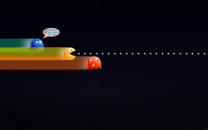

Old School Retro
Explore a world of the genre that started it all from the basic Ping-Pong, Space invaders, Tetris, Super Mario World and more. This genre has capture our minds from the early stages with their unbelievable fun filled pixel art, these changed the world of games from just black and white to colour fun and challenging.

They gave way to the preparation for today`s best genre of games, by laying that Adventurous platform that entrigued the human mind.They created a competetive atmosphere for friends with fun. The ultimate way to communicate with fun in social excitement.
In this space we will feature all the good old games that gave the foundation for the new arrivals. Prepare yourself for one great adventure back to the past.
An adventure that focus on what tricks there were that you did not knew of a certain retro game that existed. An adventure that focus on playability of the most entrique retro games.
An adventure that highlights competetive gameplay at its best for friends and family. An adventure filled with fun and laughter, full of fun and excitement. An adventure that make you want more and more of that adventure.
Never let the fun cease to exist, join us as we discuss and magnify the fun of every retro game there is. Relive those games that has proof fun on whole different level. If it was Super mario, Pacman, Road Runner whatever it may have been, let us create that feeling which brought back those pleasant gaming memories of the 80`s and 90`s.
